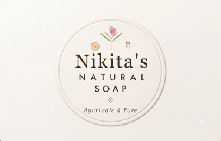

Botanical Selection
We meticulously choose the finest natural ingredients, from fragrant rose petals to potent turmeric, ensuring purity and efficacy.

A message from the founder
At Nikita’s Natural, our vision is simple — to create products that bring nature, quality, and trust into everyday life. From the beginning, our focus has been on delivering products that meet high standards while creating meaningful value for our customers.
We believe that sustainable growth comes from a strong foundation of quality, innovation, integrity, and customer trust. We are committed to continuously improving, embracing new opportunities, and building long-term relationships with our customers, partners, and stakeholders.
As we move forward, our goal is not only to grow as a brand, but also to create a lasting and positive impact in the industry and in the communities we serve.
— NIKITA SHYAMSUKHA
Our process
We meticulously choose the finest natural ingredients, from fragrant rose petals to potent turmeric, ensuring purity and efficacy.
Each batch is gently mixed by hand, preserving the integrity of our botanicals and creating unique textures.
Our soaps are cured naturally, allowing them to mature and develop their rich character and gentle lather.
Every item is thoughtfully wrapped with jute and ribbon, transforming each product into a beautiful gift.